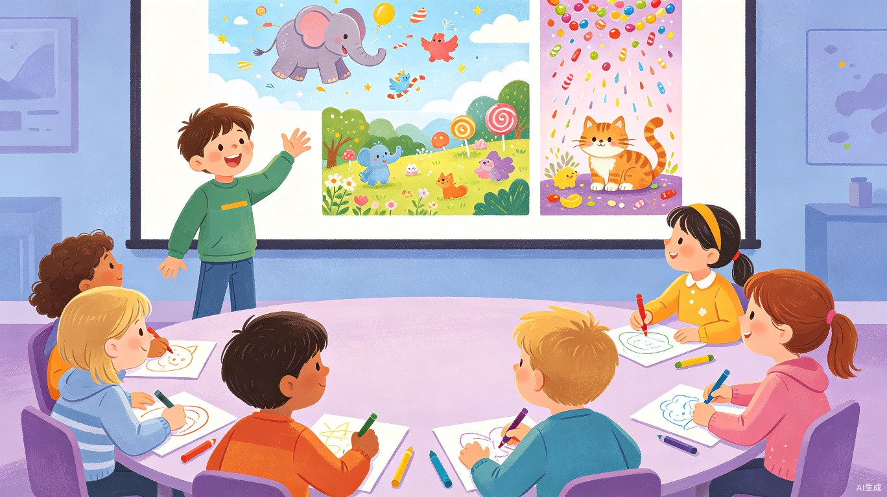

9:20 - 9:50 | 30 分钟
灵感激发: "如果世界变了样" 脑洞时刻
小朋友们围坐一圈，老师抛出一个脑洞大开的"如果"问题，比如"如果动物会说话，你最想和谁聊天？""如果天上下的是糖果雨，你的城市会变成什么样？"孩子们用纸笔快速画出脑海中的画面，然后轮流展示。AI 工具会实时把小朋友们的描述转成小插画投在大屏幕上，让想象力变得"看得见"!

📋 活动步骤
- 老师抛出第一轮"如果"问题，给孩子们 2 分钟安静思考，然后举手分享脑海中的画面
- 孩子们轮流用一句话描述自己的想象(老师鼓励大胆表达)
- 老师现场将孩子的描述输入 AI，大屏幕实时生成对应插画，让孩子们看到想象变成画面
- 进行 2-3 轮不同主题的"如果"问题，每轮更换不同风格，如科幻、童话、超现实
💬 提示词示例(小朋友原话可直接输入)
主题: 如果动物会说话
"一只戴着眼镜的猫头鹰站在图书馆里，它正在用翅膀翻书，旁边有一只小兔子在听它讲故事"
温馨的图书馆场景，拟人化的猫头鹰和小兔子
主题: 如果天上下糖果雨
"一个五彩缤纷的城市，天上飘落着巨大的棒棒糖、巧克力河在街道中间流淌，小朋友们在糖果做的房子旁边玩"
甜蜜梦幻的城市全景
🔧 推荐工具
ChatGPT + DALL-E
豆包 (字节跳动)
文心一言 + 一格
🎮 互动彩蛋
盲盒模式
老师随机抽一位小朋友的画，让AI"解读"画中的故事
风格切换
同一幅画的描述，切换成"梵高风格""宫崎骏风格"展示
小贴士: 鼓励内向的孩子用画画而非语言表达，AI 会把他们的画"翻译"成精美插画，增强自信心!